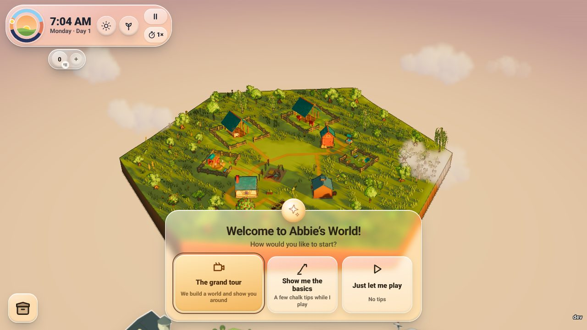
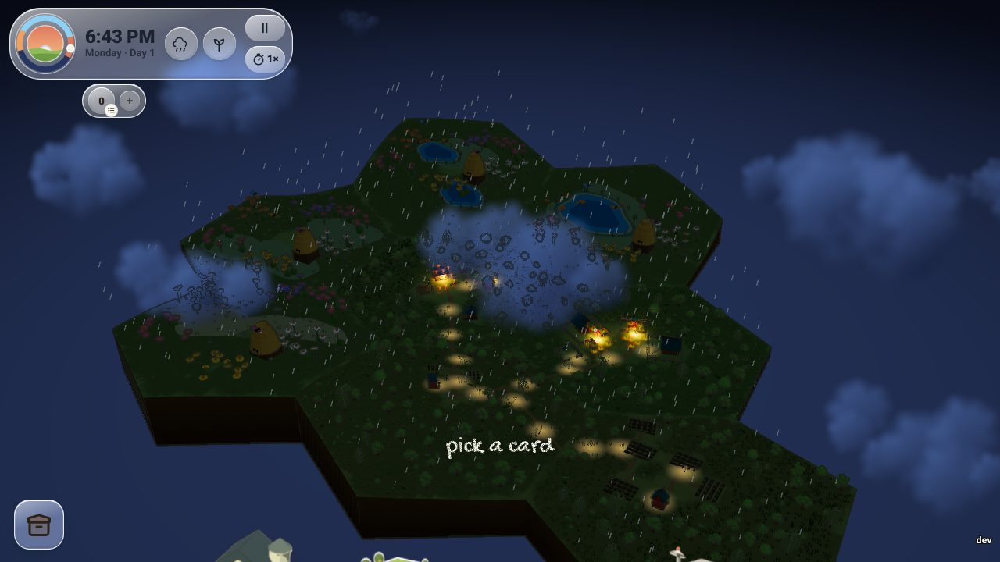
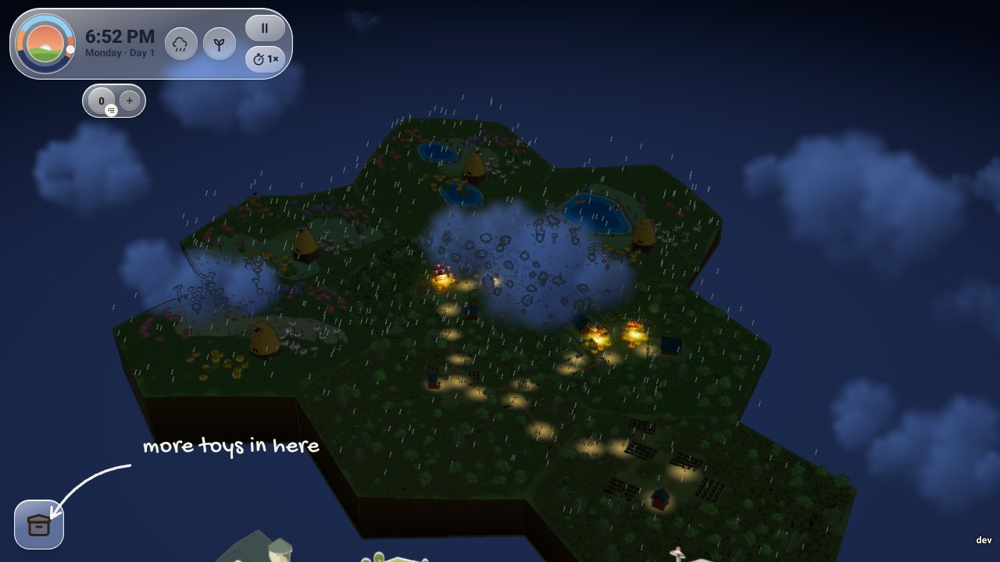

A tour guide meets every new player and asks how they want to start. The grand tour builds a sample world in front of them, then shows it off like a thirty-second commercial, narrated, while the simulation really runs. The last shot eases into the real game, and a few chalk notes follow, drawn beside the real controls and gone as soon as you use them.
Try it in the ranch
The world builds itself, a narrated camera tour of the live ranch (about 30 seconds), then it fades into play and the chalk notes follow. It is also the product tour: toy box, Welcome tour.
Straight into play with chalk notes, one at a time: drag to look around, pick a card, tap anyone to say hi, pause or speed up time, more toys in here.
No tips. The guide can be called back any time from the toy box.
Seven stops, hard cuts like a commercial, each camera move measured on the world as it is now (the real goats, the real porch), so the tour never shows something that is not there. A stop whose subject is missing is skipped.


| # | Stop | Shot | Seconds | Narrator | What the world is doing |
|---|
Evan’s rule: every new feature decides whether it goes into the tour. A feature joins by registering a stop (a camera
shot, a super and a narrator line) or a chalk hint in simulations/welcome/tour-stops.mjs, and the feature brief
(docs/design/briefs/feature.md) now asks “Tour: yes or no”. Narration is rendered from those same lines by the
welcome-narration workflow (ElevenLabs), with the browser’s voice until it has run.